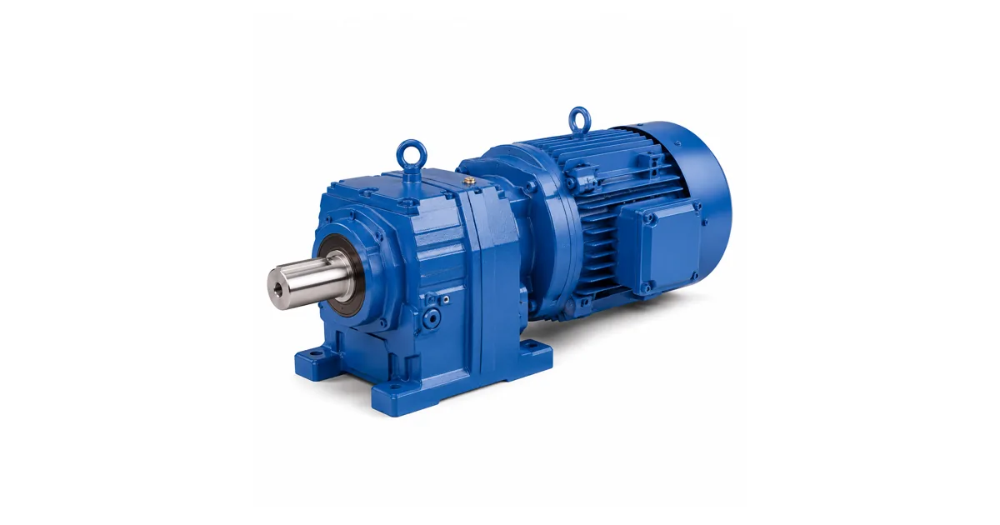

Собственное производствоПромышленные редукторы для производителей оборудования•Отгрузка по всей России•Аналоги SEW, NORD, Bonfiglioli без переделки рамы•Расчёт и КП за 15 минут•Гарантия 36 месяцевПромышленные редукторы для производителей оборудования•Отгрузка по всей России•Аналоги SEW, NORD, Bonfiglioli без переделки рамы•Расчёт и КП за 15 минут•Гарантия 36 месяцев
Опыт инженеров Завода Редукторов · время чтения ~7 минут
Правильно выбрать соосно-цилиндрический редуктор — значит согласовать пять величин: крутящий момент на выходе, передаточное число, обороты, монтажное исполнение и сервис-фактор под режим работы. Ошибка в любом параметре ведёт к перегреву или недобору момента. Разберём порядок расчёта и на что смотреть, чтобы привод отработал ресурс.
С каких параметров начинать выбор
Соосно-цилиндрический редуктор ценят за компактность по длине: вход и выход лежат на одной оси. Выбор начинается с рабочей точки механизма:
Требуемый момент на выходе M₂, Н·м — считается из усилия и радиуса на исполнительном органе;
Обороты выхода n₂, об/мин — задаются технологией;
Мощность двигателя P, кВт — по формуле M=9550·P/n с учётом КПД;
Передаточное число i = n₁/n₂ — отношение оборотов двигателя к нужным на выходе.
КПД цилиндрических ступеней высокий — 0,96–0,98 на ступень, поэтому у соосных редукторов общий КПД обычно 0,94–0,97. Это выгодно отличает их от червячных (0,7–0,9) при непрерывной работе.
Сервис-фактор и режим работы
Номинальный момент редуктора должен быть выбран с запасом — сервис-фактором SF. Он учитывает характер нагрузки, число пусков и продолжительность работы:
Режим
Ориентировочный SF
Спокойная нагрузка, S1
1,0–1,25
Умеренные удары, повторно-кратковременный
1,25–1,5
Сильные удары, частые пуски
1,5–2,0 и выше
Формула: M₂ном ≥ M₂рабоч × SF. Для конвейера с равномерной нагрузкой хватит SF≈1,25, для дробилки или пресса берут 1,75–2,0.

Типовое исполнение соосного привода
Монтаж, вал и самоторможение
Определите монтажное исполнение по чертежу рамы: лапы (B3), фланец (B5), вертикальное исполнение (V1). Соосные редукторы поставляют со сплошным или полым выходным валом под шпонку. Учтите: цилиндрическое зацепление не обладает самоторможением, поэтому при подъёмных механизмах нужен двигатель с тормозом или отдельный стопор — обратите внимание на серию редукторов с тормозом.
Проверяйте не только момент, но и радиальную/осевую нагрузку на выходной вал — при работе через звёздочку или шкив консольная сила может стать ограничивающим фактором.
Передаточное число и обороты
Передаточное число подбирают так, чтобы двигатель со стандартными оборотами (обычно 1500 об/мин при 4 полюсах, реже 1000 или 3000) давал нужные обороты на выходе: i = n₁/n₂. У соосно-цилиндрических редукторов передаточное обычно лежит в диапазоне от 3 до 200 в зависимости от числа ступеней. Если требуется большое передаточное при малых оборотах, выбирают многоступенчатое исполнение или тихоходную серию — смотрите тихоходные редукторы. Помните, что не любое передаточное реализуется в одном типоразмере: обычно доступен дискретный ряд стандартных значений, из которого выбирают ближайшее к расчётному, а затем пересчитывают фактические обороты выхода. Небольшое отклонение оборотов от идеала почти всегда допустимо, если производительность механизма сохраняется.
Расчёт момента и сервис-фактора перед подбором
Цена, ресурс и выбор аналога
При равном моменте соосный редуктор дороже червячного, но окупается за счёт КПД и ресурса при непрерывной работе. Если подбираете замену импортному приводу, ориентируйтесь на габаритные и присоединительные размеры. Мы (Завод Редукторов, ООО «НИИ АТТ», Челябинск) выпускаем российские аналоги серии ZR, повторяющие присоединительные размеры массовых импортных типоразмеров. Подобрать конкретный типоразмер поможет калькулятор подбора и каталог соосных редукторов, а разобраться в терминах — глоссарий. О замене импорта — на странице импортозамещения.
Вопросы и ответы
Частые вопросы
Как рассчитать нужный момент редуктора?
Момент на выходе считают из усилия на исполнительном органе и его радиуса: M₂ = F·R. Если известны мощность и обороты, применяют M = 9550·P/n. Полученное значение умножают на сервис-фактор режима работы — так получают минимальный номинальный момент, который должен выдержать редуктор.
Что такое сервис-фактор и зачем он нужен?
Сервис-фактор (SF) — коэффициент запаса, учитывающий ударность нагрузки, число пусков в час и продолжительность работы. Для спокойной нагрузки берут 1,0–1,25, для ударной с частыми пусками — до 2,0. Номинальный момент редуктора должен быть не меньше рабочего момента, умноженного на SF.
Соосный редуктор самотормозящий?
Нет. Цилиндрическое зацепление имеет высокий КПД и легко проворачивается обратно, поэтому самоторможением не обладает. Для подъёмных и удерживающих механизмов нужен электродвигатель со встроенным тормозом или отдельное стопорное устройство. Самоторможение характерно для червячных передач.
Чем соосный редуктор лучше червячного?
Главное преимущество — высокий КПД (0,94–0,97 против 0,7–0,9 у червячных), что означает меньший нагрев и расход энергии при непрерывной работе. Также выше ресурс и допустимый момент на габарит. Червячные выигрывают в компактности при больших передаточных и в наличии самоторможения.
Как выбрать монтажное исполнение?
Исполнение определяют по способу крепления на раме: B3 — на лапах, горизонтально; B5 — фланцевое; V1 — вертикально валом вниз. Проверьте по чертежу присоединительные размеры и положение выходного вала. При замене привода монтаж аналога должен совпадать, иначе потребуется переделка рамы.
Как подобрать российский аналог соосного редуктора?
Снимите с шильдика тип, момент M₂, передаточное i, мощность и монтаж. По этим данным подбирается аналог с совпадающими габаритными и присоединительными размерами. Мы выпускаем серию ZR, повторяющую размеры массовых импортных типоразмеров, поэтому замена выполняется без переделки рамы и валов.
Выбор соосно-цилиндрического редуктора строится на согласовании момента M₂, передаточного числа i, оборотов, монтажа и сервис-фактора. Правильный запас по моменту и учёт режима работы гарантируют, что привод отработает ресурс без перегрева и перегруза.
Подробнее: характеристики и полезные ссылки
Соосно-цилиндрический редуктор выбирают под конкретную рабочую точку механизма: считают требуемый момент, применяют сервис-фактор по режиму, задают передаточное число и монтажное исполнение. Высокий КПД (0,94–0,97) делает его оптимальным для непрерывной работы конвейеров, миксеров и насосов.
Пришлите фото или чертёж старого редуктора — изготовим аналог с теми же присоединительными. Переходной фланец или спецвал — спроектируем под вашу геометрию.
Какие документы получите с редуктором?
Паспорт изделия с характеристиками, декларация ЕАС, сертификат ГОСТ 31592-2012. Гарантия 36 месяцев — при поломке меняем по договору.
Подберём соосный редуктор под задачу
Пришлите усилие, обороты и монтаж — рассчитаем момент, передаточное и предложим типоразмер ZR с КП.
Рекомендуете наши редукторы коллегам, заказчику или своему отделу снабжения? За каждый состоявшийся заказ по вашей рекомендации выплачиваем 5% от суммы — реферальное вознаграждение переводом на карту. Прозрачный договор, работа со снабженцами и проектными отделами напрямую, отгрузка от производителя (ООО «НИИ АТТ», Челябинск).